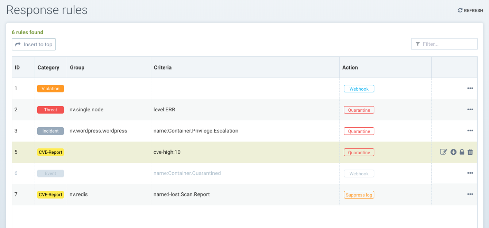

Règles de réponse
Stratégie : Règles de réponse
Les règles de réponse fournissent un moteur de règles flexible et personnalisable pour automatiser les réponses aux événements de sécurité importants. Les déclencheurs peuvent inclure des événements de sécurité, des résultats de scan de vulnérabilités, des benchmarks CIS, des événements de contrôle d’admission et des événements généraux. Les actions incluent la mise en quarantaine des conteneurs, les webhooks et la suppression des alertes.

Création d’une nouvelle règle de réponse en utilisant les éléments suivants :
-
Groupe. Une règle s’appliquera à un groupe. Veuillez consulter la section Politique de sécurité à l’exécution → Groupes pour plus de détails sur les groupes et comment en créer un nouveau si nécessaire.
-
Catégorie. Il s’agit du type d’événement, tel qu’un événement de sécurité ou un résultat de scan de vulnérabilité CVE.
-
Criteria. Spécifiez un ou plusieurs critères. Chaque catégorie aura des critères différents qui peuvent être appliqués. Par exemple, par le nom de l’événement, la gravité ou le nombre minimum de CVEs élevés.
-
Opération : Sélectionnez une ou plusieurs actions. La mise en quarantaine bloquera tout le trafic réseau entrant/sortant d’un conteneur. Le webhook nécessite qu’un point de terminaison webhook soit défini dans les paramètres → Configuration. La suppression des journaux empêchera cet événement d’être enregistré dans les notifications.

|
Toutes les règles de réponse sont évaluées pour déterminer si elles correspondent à la condition/critère. S’il y a plusieurs correspondances de règles, chaque action sera effectuée. Ceci est différent du comportement des règles réseau, qui sont évaluées de haut en bas et seule la première règle qui correspond sera exécutée. |
Des événements et actions supplémentaires continueront d’être ajoutés par SUSE® Security dans les futures versions.
Configuration détaillée des règles de réponse
Les règles de réponse permettent des réponses automatisées telles que la mise en quarantaine, le webhook et la suppression des journaux en fonction de certains événements de sécurité. Actuellement, les événements qui peuvent être définis dans la règle de réponse incluent les journaux d’événements, les journaux d’événements de sécurité, ainsi que les rapports de CVE (analyse de vulnérabilité) et de benchmark CIS. Les règles de réponse s’appliquent dans tous les modes : Découvrir, Surveiller et Protéger, et le comportement est le même pour les 3 modes.
Les actions de plusieurs règles seront appliquées si un événement correspond à plusieurs règles. Chaque règle peut avoir plusieurs actions et plusieurs critères de correspondance. Toutes les actions définies seront appliquées aux conteneurs lorsque les événements correspondent aux critères de la règle de réponse. Dans le cas où il y a une correspondance pour les événements d’hôte (pas de conteneur), actuellement les actions webhook et suppression des journaux sont prises en charge.
Il y a 6 règles de réponse par défaut incluses avec SUSE® Security qui sont définies sur le statut ‘disabled,’, une pour chaque catégorie. Les utilisateurs peuvent soit modifier une règle par défaut pour correspondre à leurs exigences, soit en créer de nouvelles. Assurez-vous d’activer toutes les règles qui doivent être appliquées.

Utilisation de plusieurs critères dans une seule règle
La logique de correspondance pour plusieurs critères dans une règle de réponse est :
-
Pour différents types de critères (par exemple, nom:Network.Violation, nom:Process.Profil.Violation) au sein d’une seule règle, appliquez « et »
Opérations
-
Le conteneur — est mis en quarantaine. Notez que la quarantaine signifie que tout le trafic réseau est bloqué. Le conteneur restera et continuera à fonctionner - juste sans aucune connexion réseau. Kubernetes ne démarrera pas un conteneur pour remplacer un conteneur mis en quarantaine, car le serveur API peut toujours atteindre le conteneur.
-
Webhook - un journal de webhook généré
-
suppress-log — le journal est supprimé - à la fois le journal syslog et le journal webhook
|
Création d’une règle de réponse pour les journaux d’événements de sécurité
-
Cliquez sur "insérer en haut" pour insérer la règle en haut
-
Choisissez un nom de groupe de services si la règle doit être appliquée à un groupe de services particulier
-
Choisissez la catégorie comme événement de sécurité
-
Ajoutez des critères pour que le journal d’événements soit inclus comme critères correspondants
-
Sélectionnez les actions à appliquer : Quarantaine, Webhook ou supprimer le journal
-
Activer le statut
-
Les niveaux de journal ou les noms de processus peuvent être utilisés comme d’autres critères correspondants
Règle d’exemple pour mettre en quarantaine le conteneur et envoyer un webhook lorsque le paquet est mis à jour dans le conteneur nv.alpinepython.default.

Icônes pour gérer les règles - modifier, supprimer, désactiver et insérer une nouvelle règle ci-dessous

Création d’une règle de réponse pour les journaux d’événements
-
Cliquez sur "insérer en haut" pour insérer la règle en haut
-
Choisissez un nom de groupe de services si la règle doit être appliquée à un groupe de services particulier
-
Choisissez la catégorie d’événements
-
Ajoutez le nom du journal d’événements à inclure comme critère de correspondance
-
Sélectionnez les actions à appliquer - Quarantaine, Webhook ou supprimer le journal
-
Activer le statut
-
Le niveau de journal peut être utilisé comme autre critère de correspondance

Création d’une règle de réponse pour la catégorie cve-report (niveau de journal et nom du rapport comme critères de correspondance)
-
Cliquez sur "insérer en haut" pour insérer la règle en haut
-
Choisissez un nom de groupe de services si la règle doit être appliquée à un groupe de services particulier
-
Choisissez la catégorie Rapport CVE
-
Ajoutez le niveau de journal comme critère de correspondance ou type de Rapport CVE
-
Sélectionnez les actions à appliquer Quarantaine, Webhook ou supprimer le journal (la quarantaine n’est pas applicable pour l’analyse du registre)
-
Activer le statut
Types de rapports CVE d’exemple pouvant être choisis pour la règle de réponse de la catégorie CVE-Report

Mettre en quarantaine le conteneur et envoyer un webhook lorsque les résultats de l’analyse de vulnérabilité contiennent plus de 5 vulnérabilités CVE de niveau élevé pour ce conteneur


Création d’une règle de réponse pour les benchmarks CIS (niveau de journal et numéro de benchmark comme critères de correspondance)
-
Cliquez sur "insérer en haut" pour insérer la règle en haut
-
Choisissez le nom du groupe de services si la règle doit être appliquée à un groupe de services particulier
-
Choisissez la catégorie Benchmark
-
Ajoutez le niveau de journal comme critère de correspondance ou numéro de benchmark, par exemple. “5.12” Assurez-vous que le système de fichiers racine du conteneur est monté en lecture seule
-
Sélectionnez les actions à appliquer : Quarantaine, Webhook et suppression de journal (la quarantaine n’est pas applicable pour les benchmarks Host Docker et Kubernetes)
-
Activer le statut

Retirez un conteneur de la quarantaine en supprimant la règle de réponse.
-
Vous pouvez vouloir retirer un conteneur de la quarantaine s’il est mis en quarantaine par une règle de réponse.
-
Supprimez la règle de réponse qui a causé la mise en quarantaine du conteneur, qui peut être trouvée dans le journal des événements
-
Sélectionnez l’option pour retirer le conteneur de la quarantaine après avoir supprimé la règle.
Visualisation de l’identifiant de la règle responsable de la mise en quarantaine du conteneur (dans Notifications → Événements)

Fenêtre contextuelle de l’option de retrait de la quarantaine lorsque la règle de réponse appropriée est supprimée.
Cochez la case pour retirer de la quarantaine tous les conteneurs qui ont été mis en quarantaine par cette règle.

Liste complète des critères catégorisés qui peuvent être configurés pour les Règles de Réponse
Notez que certains critères nécessitent une valeur (par exemple, cve-high:1, name:D.5.4, level:critical) délimitée par un deux-points, tandis que d’autres sont prédéfinis et apparaîtront dans le menu déroulant lorsque vous commencerez à taper un critère.
Événements
Container.Start
Container.Stop
Container.Remove
Container.Secured
Container.Unsecured
Enforcer.Start
Enforcer.Join
Enforcer.Stop
Enforcer.Disconnect
Enforcer.Connect
Enforcer.Kicked
Controller.Start
Controller.Join
Controller.Leave
Controller.Stop
Controller.Disconnect
Controller.Connect
Controller.Lead.Lost
Controller.Lead.Elected
User.Login
User.Logout
User.Timeout
User.Login.Failed
User.Login.Blocked
User.Login.Unblocked
User.Password.Reset
User.Resource.Access.Denied
RESTful.Write
RESTful.Read
Scanner.Join
Scanner.Update
Scanner.Leave
Scan.Failed
Scan.Succeeded
Docker.CIS.Benchmark.Failed
Kubenetes.CIS.Benchmark.Failed
License.Update
License.Expire
License.Remove
License.EnforcerLimitReached
Admission.Control.Configured // for admission control
Admission.Control.ConfigFailed // for admission control
ConfigMap.Load // for initial Config
ConfigMap.Failed // for initial Config failure
Crd.Import // for crd Config import
Crd.Remove // for crd Config remove due to k8s miss
Crd.Error // for remove error crd
Federation.Promote // for multi-clusters
Federation.Demote // for multi-clusters
Federation.Join // for joint cluster in multi-clusters
Federation.Leave // for multi-clusters
Federation.Kick // for multi-clusters
Federation.Policy.Sync // for multi-clusters
Configuration.Import
Configuration.Export
Configuration.Import.Failed
Configuration.Export.Failed
Cloud.Scan.Normal // for cloud scan nomal ret
Cloud.Scan.Alert // for cloud scan ret with alert
Cloud.Scan.Fail // for cloud scan fail
Group.Auto.Remove
Agent.Memory.Pressure
Controller.Memory.Pressure
Kubenetes.{product-name}.RBAC
Group.Auto.Promote
User.Password.AlertIncidents (Événement de Sécurité)
Host.Privilege.Escalation
Container.Privilege.Escalation
Host.Suspicious.Process
Container.Suspicious.Process
Container.Quarantined
Container.Unquarantined
Host.FileAccess.Violation
Container.FileAccess.Violation
Host.Package.Updated
Container.Package.Updated
Host.Tunnel.Detected
Container.Tunnel.Detected
Process.Profile.Violation // container
Host.Process.Violation // hostMenaces (Événement de sécurité)
TCP.SYN.Flood
ICMP.Flood
Source.IP.Session.Limit
Invalid.Packet.Format
IP.Fragment.Teardrop
TCP.SYN.With.Data
TCP.Split.Handshake
TCP.No.Client.Data
TCP.Small.Window
TCP.SACK.DDoS.With.Small.MSS
Ping.Death
DNS.Loop.Pointer
SSH.Version.1
SSL.Heartbleed
SSL.Cipher.Overflow
SSL.Version.2or3
SSL.TLS1.0or1.1
HTTP.Negative.Body.Length
HTTP.Request.Smuggling
HTTP.Request.Slowloris
DNS.Stack.Overflow
MySQL.Access.Deny
DNS.Zone.Transfer
ICMP.Tunneling
DNS.Type.Null
SQL.Injection
Apache.Struts.Remote.Code.Execution
DNS.Tunneling
K8S.externalIPs.MitMConformité
Compliance.Container.Violation
Compliance.ContainerFile.Violation
Compliance.Host.Violation
Compliance.Image.Violation
Compliance.ContainerCustomCheck.Violation
Compliance.HostCustomCheck.Violation
Compliance.Test.Name // D.[1-5].*Rapport CVE
ContainerScanReport
HostScanReport
RegistryScanReport
PlatformScanReport
cve-name
cve-high
cve-medium
cve-high-with-fix // cve-high-with-fix:N (fixed high vul.>N) cve-high-with-fix:N/D (fixed high vul.>N and reported more than D days ago)